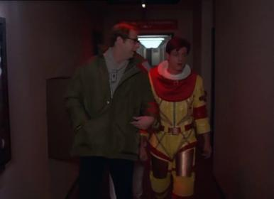
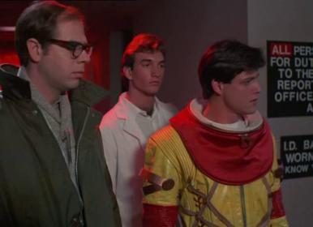

I’m not going to pretend that I have anything more than a rudimentary knowledge of Einstein’s work.  However, I see no reason to believe that us 3-dimensional beings are the highest in spacial dimensions, and that the 4th dimension must (somehow) be time.
However, I see no reason to believe that us 3-dimensional beings are the highest in spacial dimensions, and that the 4th dimension must (somehow) be time.
Look, Portal 2 achievements:
https://www.succesfull.fr/index.php?option=com_succesfull&Itemid=6&l=en&JeuID=1169
There is a clearly hint to something from Half-life. Watch closer.
the fourth dimension is time to us
It seems to me that from that basis, one could also infer that the 3rd dimension is “time” to 2-dimensional creatures - which, as it is very clear to us 3-dimensional creatures, is not the case.
I see:
Ship Overboard
Discover the missing experiment
Could this have something to do with the Borealis?
umm yes of course it is, that was the point of “to us”
four-dimensional beings’ time would be the fifth dimension, or something
This is true. the borealis could have been in a very slow teleport for years. Maybe an effect of time travel is why the ship disappeared and wasn’t found for so long?
I sir, will never try to crush your dreams.
Which makes the parallels to some of the Philadelphia Experiment & Montauk Project stories all the closer. I’m probably going to watch the 1984 movie based on it pretty soon. According to wikipedia, there’s even a character in it named Barney.
Good man. :freeman:
You do know what the word “dimension” means right? And that whole explanation of 4th Dimension you might have seen by Carl Sagan was purely for the sake of analogy right?
What the?
What is the reasoning behind the idea that the 4th dimension is time? That’s what I fail to see. It’s certainly not the consensus in the physics community.
The word dimension refers to an aspect of something that could be measured, typically on a coordinate grid. That’s why I before thought you might have been referring to gravity as the 4th dimension. There are other higher ‘dimensions’, but they’re mathematical & abstract, making them pretty hard to explain, especially since they seem to be lacking in definition.
Ugh. I hate that video.
I was just watching the movie Philadelphia Experiment & you should have seen my face light up when I heard one of the (very, very minor) characters addressed as “Dr. Magnusson”. Not to mention the giggle I got out of the suit in the attached pictures. (but not as funny as when a jeep rolled down hill, flipping about 4 times before exploding randomly)
Dave goes back in time to make the Eldridge reappear in the past shortly after it disappeared. Notably different from Half-Life where “few believed the Borealis would ever be seen again”


Nice video. I was already known about four dimensions representation, but in this clip it explains more simply to understand and show more possible roots to evolve. Although in my opinion, I think that there only 4 real dimensions - line, flat, space and time. The fifth, sixth, etc is simply theoretical representations of a possible time dimension in the future.
The Borealis is a Paradox, you need to destroy the High-Frequency Generators on board to close up any kind of Rift
whether or not the rest are purely theoretical (hypothetical), they have nothing to do with time as we perceive it
I have two theories
-
Gaben ate episode 3 and we will never get to play it.
-
We might see some new stuff, better graphics, better AI, new weapons, etc. but nothing really that special, I really don’t expect to be blown away like I was when i played half-life 1 and 2.
Gay-b … Gay ben
I’m sure. Many HL high-experienced veterans think so. It’s gonna be AT LEAST connect to Borealis.
I’m guessing the Borealis returns to the Drydocks, “someone” must of flipped the switch 
But will we be able to climb aboard and see what happened, will we see a HEV suit with a skeleton inside?
I have a theory about the Borealis.
Don’t you guys think that it’s simply Aperture Science portal technology?
I mean seriously now, think about it: Black Mesa only had those big huge teleports like the ones in Half Life 2, didn’t they?
Aperture Science created the Aperture Science Handheld Portal Device, that is not only completely safe and reliable, but also handheld and fast.
The Combine doesn’t even know how to teleport inside a single universe, they can only tunnel through from theirs, and then they’re reliant on local transportation. That’s why the Resistance teleport work is guarded.
The Borealis just contains Aperture Science portal technology.
If only the Department of Defense had paid more attention to them, perhaps an ASHPD could be put on rifles, like an M203 grenade launcher. Then, completely to the bafflement of the Combine, Earth’s soldiers could portal all over the place while shooting the Combine’s forces. Not to mention logistical support which would come from the portal technology. All the while, the Combine would be clueless. We could have won the 7 hour war.
What do you guys think?